El concepto base en el cual se centra el proyecto es una teoría científica planteada por el físico Erwin Schrödinger. Se trata de una paradoja, un ejercicio mental para explicar lo divergente que puede ser la física cuántica. El experimento (conocido como el Gato de Schrödinger), consiste en encerrar en una caja totalmente opaca un gato, un martillo y una botella de veneno. El martillo se conectaría a un detector de electrones, y a este se le dispararía un electrón que previamente deberá optar por una de dos rutas. Si el electrón toma la primer ruta, el detector lo alcanzará, este activará el martillo, el martillo romperá la botella y el veneno matará al gato. Sin embargo, si toma la segunda ruta, el detector no se activará y el gato vivirá. Por su capacidad cuántica de estar en dos sitios al mismo tiempo, el electrón habrá tomado ambas rutas a la vez, por lo cual el gato se encontrará vivo y muerto a la vez. Este concepto de superposición de la contraposición es el concepto clave para definir el proyecto en cuestión. La idea del todo/nada, de estar en todos lados y a la vez no estar en ningún sitio.
Experimento de la Doble Rendija: youtu.be/fUZZgDOrY30
Gato de Schrödinger: youtu.be/JC9A_E5kg7Y
Se planea la utilización de dispositivos móviles y tablet para la visualización del sitio en exteriores. No obstante, el uso de laptops (notebooks o netbooks) es también una opción válida. Esto deriva de la idea de prótesis y por una comodidad del usuario al momento de desplazarse.
Por otro lado, se optó por desarrollar las obras en realidad aumentada. Las razones fueron muchas, pero principalmente la gran relación informática de las imágenes en binario con las obras en sí, y la fuerza de la ubicación de cada obra con relación al sitio y a una comunidad de usuarios.
Para la versón de 2011, se utilizó un SWF y ActionScript. En su momento, la librería utilizada para realidad aumentada fue FLARToolKit, con Papervision y AsCollada. Actualmente, se utiliza la librería JSARToolKit, ThreeJS y ColladaLoader. Para generar el 3D se exporta un formato DAE desde el programa Blender.
Una idea general es no centrarse en artistas plásticos solamente, sino también en escritores y músicos. por lo tanto, la investigación va referida a la mayor cobertura posible de artistas de una determinada región.
Lista de "los coleccionistas": loscoleccionistas.com/trastienda
Mapa de artistas de la boca: buenosaires.gov.ar/laboca
Webmuseum: ibiblio.org/wm/paint/auth
Acropolisinc: cgfa.acropolisinc.com
Pintores Famosos: pintoresfamosos.cl
Mariano Ferrante: marianoferrante.com.ar
Emilio Pettoruti: pettoruti.com
Piet Mondrian: pietmondrian.org
¿Cómo sabe el usuario dónde están las obras? ¿Cómo sabe que están cerca o lejos de su vivienda? En este sentido, podría tener una obra a pocos metros de su vivienda y no saberlo. Por lo tanto, se incluyó como una sección importante a la geolocalización. relacionándose directamente con los dispositivos móviles, el usuario puede consultar en cualquier momento su ubicación y relacionarla con la ubicación de alguna obra que desee ver. De esta manera, se mantiene en el sitio hasta el momento de ver la obra a través del mismo.
El sitio trabaja con una metáfora de galería de arte, donde los cuadros que se exponen son simplemente los códigos binarios. Además, se recurre a no tener un lugar fijo para mostrar las obras, sino a que las obras vayan a la calle, al alcance de todos. Concepto resignificado de la Bauhaus. Alejandro Jodorowsky dice que los museos son los cementerios del arte. Parece ser que cuando el arte no está integrado en la sociedad, en el tiempo presente y en relación con la gente se convierte en algo muerto. No es orgánico, no está vivo, es una mascarada.
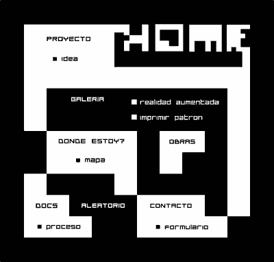
Una gran problemática fue la correcta implementación del 3D con texturas manuales. El problema consistía en la inmensa cantidad de polígonos que se necesitaban para una obra en 3D que se vea bien, sumado a las texturas producían un entramado de caos en la reproducción del sistema en cuestión. El pasaje se produjo lentamente, tratando de restar la cantidad de polígonos internos, logrando bases mas plenas. Sin embargo, los resultados no fueron los esperados. Si bien el tamaño del archivo se reducía y la reproducción era mas limpia, no era suficiente para que esto tenga un soporte en la web. Finalmente, basándonos en la técnica de Recorrido Visual 3D, generamos planos de imágenes con profundidad, lo cual permite fragmentar mejor la obra (a nivel de imagen) y poder manipular la profundidad de las capas para generar el 3D. Esto produce una obra limpia y liviana.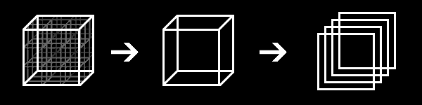
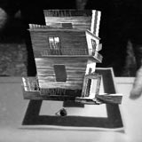 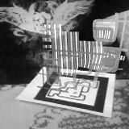
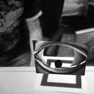 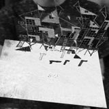
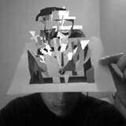 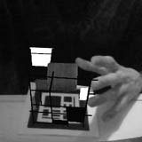
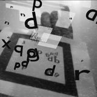 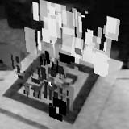
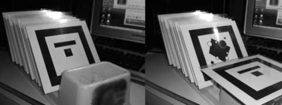
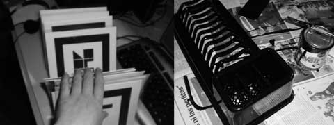
En plan de mantener un contacto entre los autores y los espectadores o interesados en participar del proyecto, se crea un Blog donde se muestren las versiones previas de Qbita. En el mismo se podrán subir archivos, ideas, preguntas o reportar un bug o una deficiencia del programa.
Qbita UX Blog: qbita.blogspot.com
 Qbita
Qbita